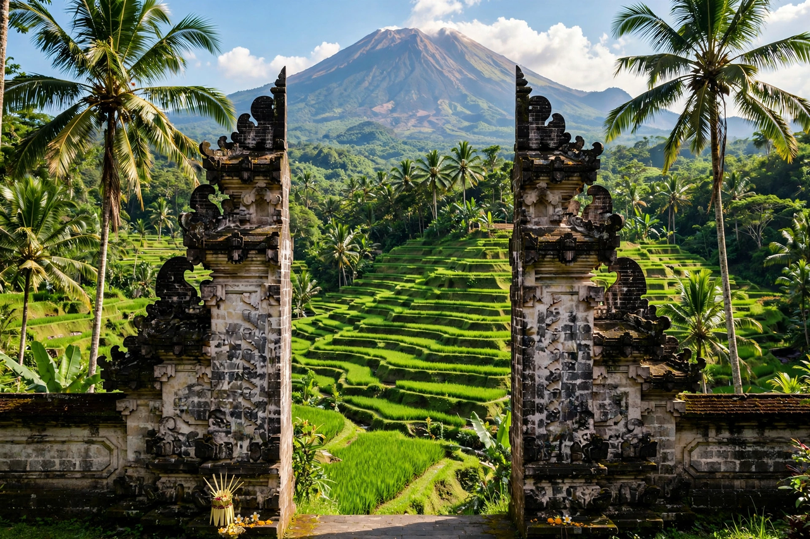

Bali is a province and island of Indonesia, the westernmost of the Lesser Sunda Islands, east of Java and west of Lombok. Its capital is Denpasar. It is Indonesia's main tourist destination and the only Hindu-majority province in the country.

Balinese Hinduism blends Hinduism with animism and ancestor worship. The island is famed for dance, gamelan music, painting, sculpture, temple festivals and the subak irrigation system for rice terraces, a UNESCO cultural landscape.
Bali was part of Hindu kingdoms linked to Java, resisted Dutch colonisation until the early 20th century (including the puputan ritual suicides of 1906-1908), and became part of independent Indonesia. The 2002 Bali bombings killed 202 people.
Centres include Kuta, Seminyak, Ubud, Sanur and Nusa Dua, drawing millions of visitors for beaches, surfing, temples such as Uluwatu and Besakih, and Mount Agung and Mount Batur volcanoes.